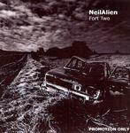

Home Artist links

Neil Alien - Fort Two
| Artist: | Neil Alien |
| Title: | Fort Two |
| Label: | self produced |
| Length(s): | 27 minutes |
| Year(s) of release: | 2005 |
| Month of review: | [12/2005] |
Line up
Jarkko Tiusanen - guitars, vocals
Henri Bjorklid - bass
Konsta Erola - piano, keyboards
Pirila Söderholm - sax, vocals
Tomas Vuori - drums
Jaakko Toivonen - emotional landscapes (keyboards)
Tracks
| 1) | Never Even | 3.22
|
| 2) | Nine On | 7.35
|
| 3) | Unspoken | 4.31
|
| 4) | Fort Two | 5.02
|
| 5) | Ever Even | 7.19
|
Summary
Hailing from one of my favourite cities, Turku in Finland, Neil Alien is
a band, not a person.
The music
Never Even is the atmospheric opener, with an excellent dancing vocal melody
and a sax lining the moody music. Seems that more and more bands work in the
area of progressive pop. Thus links to Gazpacho, Japan and Roxy Music
are easy to make, although the voice of Tiusanen is not like
that of any of the singers of those bands which helps
them have an identity of their own. We move right into Nine On with
great percussive piano and whispered vocals. I am even reminded
a bit of the early years of Renaissance. Here the voice of David Sylvian
comes to mind, quite strongly in fact. Again, some excellent
melodies lead the song, and we also have some female backing vocals, that contrast
nicely with the throaty vocals of Tiusanen. A low paced, dark song.
Maybe the vocalist could have 'sung' a bit more, in the second half his
voice is a bit too much spoken like, he is not as proficient in the lower
regions of his voice.
On Unspoken, the sax is back, and the result is a moody tune in the vein
of Japan. Then the music picks up again, as the sax comes dancing in.
The guitar work is all focussed on atmosphere, not on solo's.
The vocals are a bit unsteady here, as if he cannot contain himself.
Similar remarks hold for Fort Two. The music is somewhat
minimalistic and we have mainly the vocals as anchor point.
Tiusanen often sings in the lower regions, but he loses touch of melody here,
he does not have the control it seems. Then the piano comes in and builds
up percussively. The pace goes up, the sax sets in and we are in for an
excellent finale.
Ever Even is the closer, which reminds me strongly of Gazpacho, both
in the vocals of Tiusanen as the song itself, especially in the chorus.
The bass and guitar are responsible for a large part of the
gloomy yet enticing atmosphere on this song.
Conclusion
This is really a promising mini album from Finland. The style of the
band includes references to Gazpacho (fans of this band should certainly
go and have a listen) and Japan. The voice of Tiusanen is one that fits
well in with the generally gloomy, atmospheric music, although he should
take care in the lower regions. The backing vocals are a nice touch and
that the female vocalist also plays some sax to line the music is an added
bonus. Vocals, piano and sax are the dominant melodic elements here, while
guitar, bass, and drums are mainloy backdrops. Sometimes, the atmospheric
brand of music is only backdrop (the second half of Ever Even for instance)
so they also get their place in the sun (even if they stay subdued).
Anxiously awaiting the follow-up.
© Jurriaan Hage